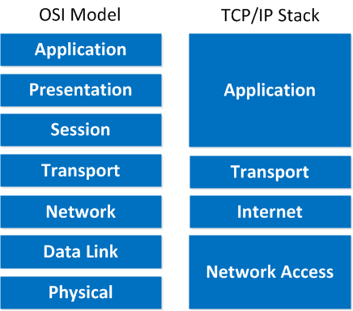

OSI Model
OSI - Open System Interconnection
Networking protocol
Networking protocols define a common format and a set of rules for exchanging messages between devices
Benefits of using layered model
- Provides a common language
- create a competition between vendors
- Changes in one layer don't affect other layers
- Assists in protocol design
OSI layers
7. Application
- user interface to the network
- protocols - HTTP, FTP, SNTP, DNS, Telnet
6. Presentation
- Translation
- Encryption
- Compression
- protocols - SSL, TLS
5. Session
- Dialog control - Allows the two communicating processes to enter into a dialog
- Synchronization - Session layer adds checkpoints in between the long data stream passed by the layer above
- protocols - NetBOIS, PPIP
4. Transport
- PORT numbers
- Segmentation
- Connection control
- Flow control
- Error control
- Process to process
- segments
- protocols - TCP, UDP
3. Network
- Routing
- Logical addressing(IP addressing)
- Host to host
- packets
- protocols - IP, ARP, ICMP, IPSec
2. Data Link
- Framing
- Physical Addressing (MAC address)
- Flow control
- Error control
- Access control
- Hop to hop
- frames
- protocols - PPP, ATP, Ethernet
1. Physical
- Transmit raw data over transmission media
- converts digital/analog bits into electrical or optical signals
- bits
- protocols - Ethernet, Bluetooth, USB, IEEE802.11
TCP/IP stack

MAC address
- Physical address
- Universally unique address
- 48 bit long
- first 3 bytes - OUI (Organizationally Unique Identifier)
- last 3 bytes - NIC (Network Interface Controller)